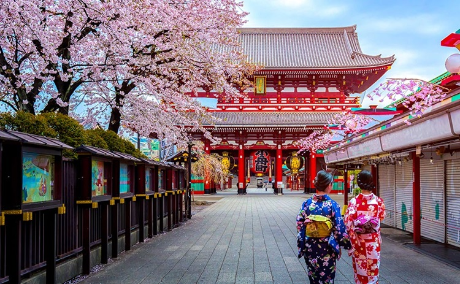
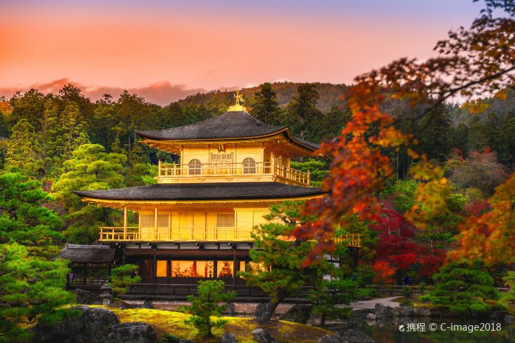

Japan 일본
| 국가면적 | 수도 | 공용어 |
|---|---|---|
| 377,915㎢ | 도쿄(Tokyo) | 일본어 |
일본은 한국과 거리상으로도 가까워서 쉽고 편하게 여행할 수 있는 국가입니다. 전세계적으로도 잘 알려진 관광대국이며 관광 인프라가 잘 갖추어져 있기때문에 한국, 중국을 제외한 타국에서도 선호하는 관광국이며 국토 전반에 걸쳐 인기 관광지가 산재해있습니다. 일반적인 기후는 여름이 한국보다 더우며 겨울은 따뜻합니다. 지역 별로 차이가 있으나 해양성 기후가 대부분인 일본은 한국의 영동지방 정도의 날씨를 보이고 있습니다. 관광객이 주로 찾는 지방 4대도시는 삿포로, 센다이, 히로시마, 후쿠오카 입니다.
1. 도쿄 센소지
센소지는 아사쿠사의 관음사라고도 불리는 유명한 불교 사찰입니다. 도쿄에서 가장 오래된 절로 해마다 많은 관광객이 방문하고 있습니다. 전해오는 이야기에 따르면 645년 관세음보살을 모시기 위해 센소지가 지어졌다고 합니다. 센소지 뒤로는 1649년에 세워진 오층탑이 자리고 있으며, 센소지 못지 않은 인기를 누리고 있습니다.
2. 교토 금각사
금각사는 교토에서 가장 인기 있는 관광명소 중 한 곳입니다. '금으로 꾸민 누각'이라는 이름에 걸맞게 황금빛 건물이 자리한 선종 사찰인 금각사는 유네스코 세계문화유산으로 지정되어있습니다. 일본식 정원 안에 자리한 멋진 건물이 아름다운 경치를 자아냅니다. 3층으로 이루어져 높이가 12.8m인 금각사의 누각은 2층과 3층 모두 옻칠을 하고 금박을 입혀 독특한 모습을 자랑합니다.
3. 유후인 온천

유후인 온천은 일본 규슈 오이타현 유후시에 있는 온천으로 일본에서 3번째로 용출량이 많은 온천입니다. 벳푸시의 서쪽에 위치하고 있으며, 후쿠오카시에서 기차로 2시간 남짓 걸리는 거리에 위치하고 있습니다. 유후인 역에 내리자마자, 유후다케(1584m) 산이 웅장하면서도 자애로운 모습으로 유후인을 감싸고 있는 것을 발견할 수 있으며, 유후인 역에서 긴린코라는 호수까지 이르는 길에는 다양한 상점들과 온천여관, 미술관 등의 시설들이 이어져 있습니다.